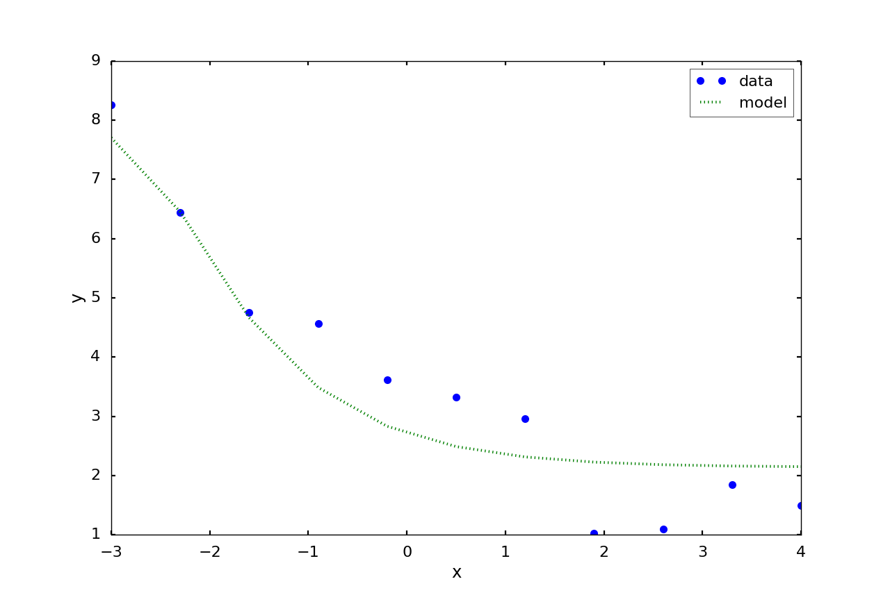

Numerical Methods Week 3¶
Curve Fitting 1¶
We continue with Curve Fitting. This week polynomial and multiple linear regression.
Reading: Capra and Canale, introduction to part 5 and chapter 17.
Learning outcomes:
Matt Watkins mwatkins@lincoln.ac.uk¶
Least Squares Regression - summary¶
we saw in lecture 1 that given our assumption of a straightline $$ y_i = a_0 + a_1 x_i + e_i $$ the error at each point is given by $$ e_i = y_i - a_0 - a_1 x_i $$
We take the sum of the squares of the errors $$ S_r = \sum_{i=0}^{n-1} e_i^2 = \sum_{i=0}^{n-1}(y_i - a_0 - a_1 x_i)^2 $$ as our error criterion.
We can find an optimal $a_1$ and $a_0$. $$ a_1 = \frac{n \sum x_i y_i - \sum x_i \sum y_i}{n \sum x_i^2 - (\sum x_i)^2} $$ and $$ a_0 = \frac{\sum y_i}{n} - a_1 \frac{\sum x_i}{n} = \bar{y} - a_1 \bar{x} $$
$\bar{y}$ and $\bar{x}$ are the means of the $x$ and $y$ values. $$ \bar{y} = \frac{1}{N}\sum_{i=0}^{N-1} y_i \qquad \bar{x} = \frac{1}{N}\sum_{i=0}^{N-1} x_i $$
Correlation of the data: covariance of the data $(x,y)$ divided by the standard deviation of $x$ and $y$.
$$
r = \frac{n \sum x_i y_i - (\sum x_i)(\sum y_i)}{\sqrt{n \sum x_i^2 - (\sum x_i)^2}\sqrt{n \sum y_i^2 - (\sum y_i)^2}}
$$
Exercises¶
Remember in week 1 we looked at finding sums:
Now add an extra array into your code and calculate the following:
$\text{let } x_i = i, i = {1,2,\dots,10}$ and $\text{let } y_i = 2i + 0.3$ for $i = {1,2,\dots,10}$
Check your results are correct! I'd suggest using both inspection and Excel.
Array bounds¶
This code example goes wrong because it tries to access x[10]
C arrays start from element [0] and go up to [n-1].
So in the code below x[0], x[1], ... x[9] are assigned.
But in the loop, x[10] just prints whatever happens to exist in that memory location.
// Be careful of array bounds
#include<iostream>
int main()
{
// assign an array of length 10
double x[10] = {0,1,2,3,4,5,6,7,8,9};
// loop over array elements, be very careful!
// array elements not assigned will contain random data
// visual studio may complain (depends on version, it seems)
for (int i = 0; i < 11; i++) {
std::cout << "i = " << i << ", x[" << i << "] = " << x[i] << "\n";
}
}
Polynomial Least-squares Regression¶
We can easily extend our method to deal with polynomicals: $$ y_i = a_0 + a_1 x_i + a_2 x_i^2 + \ldots + a_n x_i^n + e_i $$
and an overall error function $$ S_r = \sum_{i=0}^{N-1} (y_i - a_0 - a_1 x_i - a_2 x_i^2 - \ldots - a_n x_i^n)^2 $$
We then take partial derivatives with respect to the parameters ($a_0 \ldots a_n$) to get a set of equations.
Setting these equations equal to zero, writing in matrix form, then solving, gives us the optimal set of parameters.
Fitting a Quadratic function¶
In the case that the largest power of $x$ is $x^2$ we have $$ y_i = a_0 + a_1 x_i + a_2 x_i^2 + e_i $$ and an overall error function $$ S_r = \sum_{i=0}^{N-1} (y_i - a_0 - a_1 x_i - a_2 x_i^2)^2 $$
This leads to a set of equations \begin{align*} \left(n\right)a_0 + \left(\sum x_i\right) a_1 + \left(\sum x_i^2\right) a_2 & = \sum y_i \\ \left(\sum x_i\right) a_0 + \left(\sum x_i^2\right) a_1 + \left(\sum x_i^3\right) a_2 & = \sum x_i y_i \\ \left(\sum x_i^2\right) a_0 + \left(\sum x_i^3\right) a_1 + \left(\sum x_i^4\right) a_2 & = \sum x_i^2 y_i \\ \end{align*}
using the data you can find on Blackboard for today's session under the assessments tab."
Multiple Linear Regression¶
Instead of powers of a single variable, our model for $y_i$ could be that it is a function of several independent variables: $$ y_i = a_0 + a_1 x_{1i} + a_2 x_{2i} + a_3 x_{3i} + \ldots + a_n x_{ni} $$
Using the following data $$ \begin{array} {ccc} x_1 & x_2 & y \\ \hline 0 & 0 & 5 \\ 2 & 1 & 10 \\ 2.5 & 2 & 9 \\ 1 & 3 & 0 \\ 4 & 6 & 3 \\ 7 & 2 & 27 \\ \hline \end{array} $$
Linearization of data sets¶
Multiple Linear Regression is not just limited to obviously linear data.
General Linear Least Squares¶
Simple linear, polynomial and multiple linear regression can be generalised to the following linear least-squares model $$ y = a_0 z_0 + a_1 z_1 + a_2 z_2 + \cdots + a_m z_m + e $$ where $z_0, z_1, \ldots , z_m$ are $m+1$ $\textbf{basis functions}$.
What would $z_0, z_1, \ldots , z_m$ be for
The linear refers to the parameters $a_0, a_1, \ldots, a_m$, the $z$s can be highly non-linear
For instance. $$ y = a_0 + a_1 \cos (\omega t) + a_2 \sin (\omega t) $$ fits this model.
General Linear Least Squares¶
We can rewrite $$ y = a_0 z_0 + a_1 z_1 + a_2 z_2 + \cdots + a_m z_m + e $$ in matrix notation as $$ \{Y\} = [Z]\{A\} + \{E\} $$ where $\{\}$ indicates a column vector, for clarity, and $[]$ indicates a matrix. $[Z]$ contains the calculated values of the $m+1$ basis functions at the $n+1$ measured values of the independent variables: $$ [Z] = \left[ \begin{matrix} z_{00} & z_{10} & \cdots & z_{m0} \\ z_{01} & z_{11} & \cdots & z_{m1} \\ \vdots & \vdots & \ddots & \vdots \\ z_{0n} & z_{1n} & \cdots & z_{mn} \\ \end{matrix} \right] $$
The column vector $\{Y\}$ contains the $n+1$ observed values of the dependent variable $$ \{Y\}^T = \left[y_0, y_1, y_2, y_3, \ldots, y_n \right] $$ The column vector $\{A\}$ contains the $m+1$ unknown parameters of the model $$ \{A\}^T = \left[a_0, a_1, a_2, \ldots, a_{m} \right] $$ The column vector $\{E\}$ contains the $n+1$ observed residuals (errors) $$ \{E\}^T = \left[e_0, e_1, e_2, e_3, \ldots, e_n \right] $$
General Linear Least Squares¶
We can also express error in our model as a sum of the squares much like before: $$ S_r = \sum_{i=0}^{n}\left(y_i - \sum_{j=0}^{m} a_j z_{ji} \right)^2 $$ Again, $S_r$ is minimised by taking partial derivatives wrt $a_i$, and yields $$ [[Z]^T[Z]]\{A\} = \{[Z^T]\{Y\}\} $$ which is equivalent to the normal equations (set of simultaneous equations for $a_i$ we found previously). More details can of the derivation can be found here, though the notation is a little different.
This set of equations can be solved using the methods of solving linear equations.
For now, it can be done brute force by calculating the matrix inverse of $[[Z]^T[Z]]$ or using Gauss elimination.
Try to redo the earlier fitting problems in this notation / method.
General Linear Least Squares - Example¶
Suppose we have 11 measurements at
$$
x^T = -3. , -2.3, -1.6, -0.9, -0.2, 0.5, 1.2, 1.9, 2.6, 3.3, 4.
$$
with values
$$
y^T = 8.26383742, 6.44045188, 4.74903073, 4.5656476 , 3.61011683,
3.32743918, 2.9643915 , 1.02239181, 1.09485138, 1.84053372,
1.49110572
$$

Let us fit it to a function of the form $y_i = a_0 + a_1 e^{-x} + a_2 e^{-2x} $
Our $Z$ matrix has 3 columns - for the basis function corresponding to $a_0$, then $a_1$ ($e^{-x}$) and then the term corresponding to $a_2$ $e^{-2x}$. It will have 11 rows corresponding to the 11 measurements.
Z =
[[ 1.00000000e+00, 2.00855369e+01, 4.03428793e+02],
[ 1.00000000e+00, 9.97418245e+00, 9.94843156e+01],
[ 1.00000000e+00, 4.95303242e+00, 2.45325302e+01],
[ 1.00000000e+00, 2.45960311e+00, 6.04964746e+00],
[ 1.00000000e+00, 1.22140276e+00, 1.49182470e+00],
[ 1.00000000e+00, 6.06530660e-01, 3.67879441e-01],
[ 1.00000000e+00, 3.01194212e-01, 9.07179533e-02],
[ 1.00000000e+00, 1.49568619e-01, 2.23707719e-02],
[ 1.00000000e+00, 7.42735782e-02, 5.51656442e-03],
[ 1.00000000e+00, 3.68831674e-02, 1.36036804e-03],
[ 1.00000000e+00, 1.83156389e-02, 3.35462628e-04]]
Then we set up the linear equation problem by forming \([Z]^T[Z]\) and $[Z]\{y\}$ and combine them to form the following augmented matrix
[[ 1.10000000e+01, 3.98805235e+01, 5.35475292e+02, 3.86526046e+01],
[ 3.98805235e+01, 5.35475292e+02, 9.23382518e+03, 2.57093542e+02],
[ 5.35475292e+02, 9.23382518e+03, 1.73292733e+05, 3.89173010e+03]]
The solutions of this problem are
a = [ 2.13758951, 0.58605735, -0.01537541]
This means that our final model for the data is
$$
y = 2.13758951 + 0.58605735e^{-x} - 0.01537541e^{-2x}
$$

Statistical interpretation of least squares¶
The matrix $[[Z]^T[Z]]^{-1}$ actually contains the variance (diagonal elements) and covariances (off-diagonal elements) of the $a_i$ so can be used to estimate the accuracy of the parameter estimation.
We can use the Gauss Jordan method to find $[[Z]^T[Z]]^{-1}$.
We will look into this in more detail next week.
Summary and Further Reading¶
You should be reading additional material to provide a solid background to what we do in class
Reading: Capra and Canale, introduction to part 5 and chapter 17.
Lots of details inchapters 14 and 15 of Numerical Recipes.